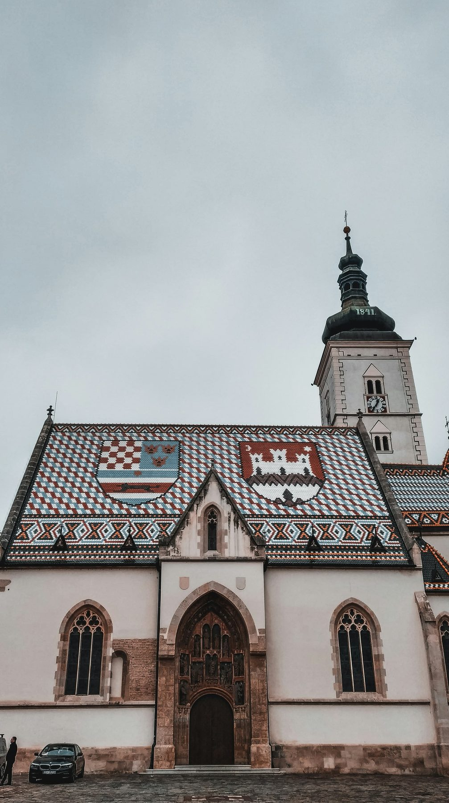
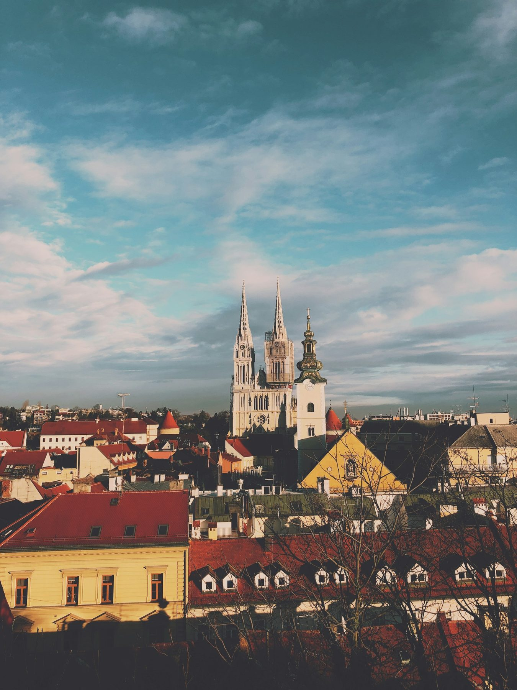

Zagreb
No. 24 · Croatia · from the Croatia deck · 2 nights · capital & culture
The deck opens here, inland: two nights of Austro-Hungarian heritage meeting street life — the Upper Town's lanes, a church with a painted roof, a market that feeds the city, and café culture worth staying out for. Then the road south to Split, four to five hours.
The list
| No. | Thing | Notes |
|---|---|---|
| 1 | The Upper Town (Gornji grad) | The historic hilltop quarter — cobbled lanes, gas-lamp atmosphere, and the city's best views back down over the red roofs. |
| 2 | St Mark's Church | The tiled roof in the coats of arms of old Croatia and Zagreb — the deck's headline sight, and it earns it. |
| 3 | Dolac Market | The market hall and stalls that feed the city — a morning walk-through with the day's shopping happening around you. |
| 4 | Štrukli and café culture | The deck's food order: štrukli (baked cheese pastry), then the café-and-nightlife circuit — the city stays out late. |
| 5 | The road to Split | The deck's connecting leg: about 4–5 hours by road, actual time varies by route and traffic. Bus or car both do it — the Plitvice detour makes it a day. |


Eat & drink: štrukli, market lunches, and a long café evening — the deck's Zagreb is a food-and-streets stop, not a checklist one. Currency is the euro (Croatia joined in 2023). Zagreb airport (ZAG) is the region's best-connected gateway on the flights page.Field note · Balkans 2027